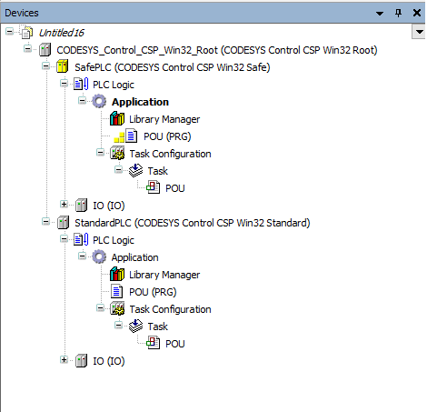
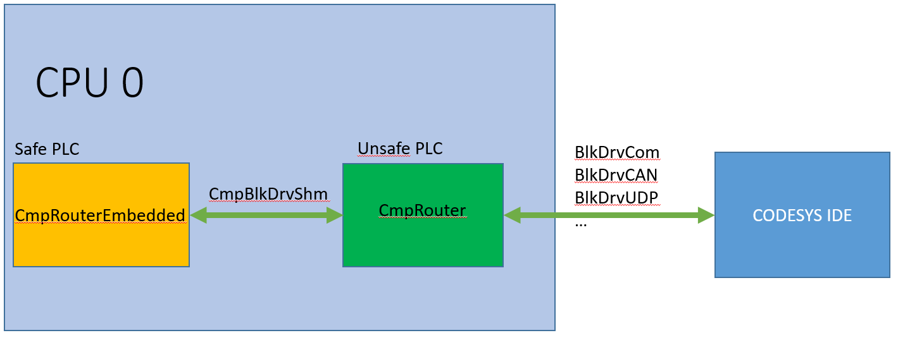
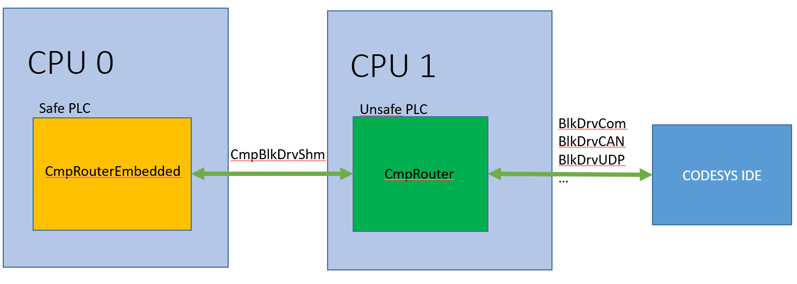
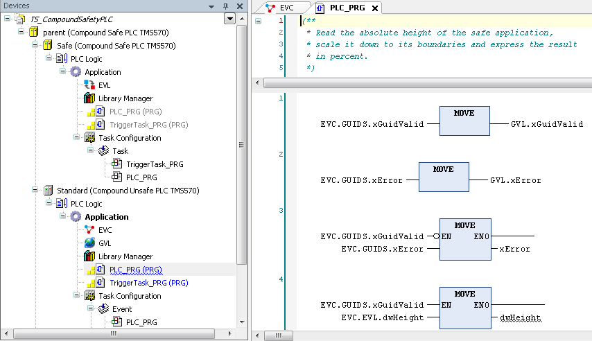
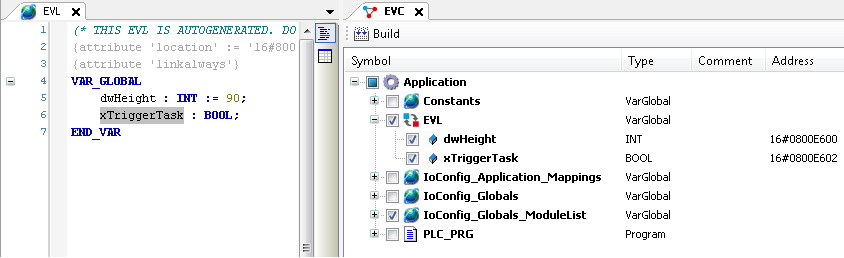
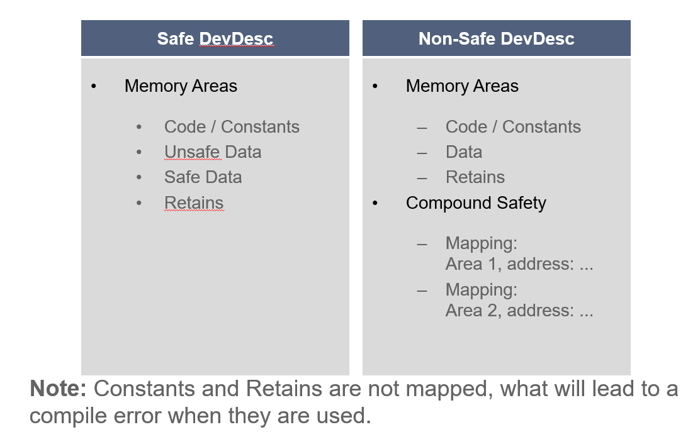
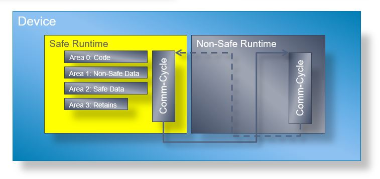
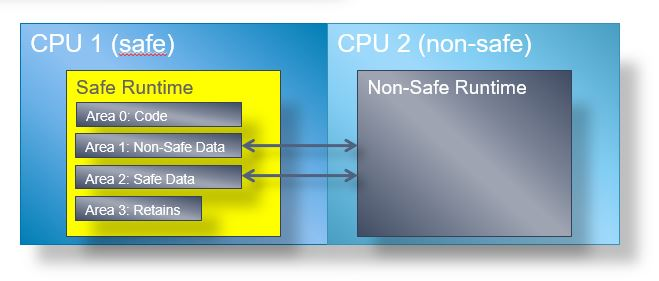
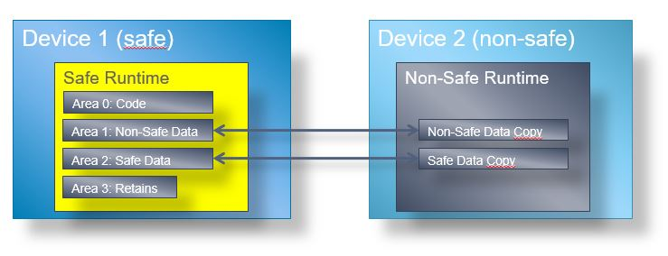

3.3.3. Compound Safety¶
3.3.3.1. Getting Started¶
Safety controllers are used in a wide range of diverse markets and machines. Classical safety controllers are separated controllers, handling only a small portion of the machine and are focusing fully on the safety aspects of the machine.
But while the software in machines is becoming more complex, there is a growing demand for controllers, which can handle safe functions, as well as non-safe functions. But when a controller contains safe- as well as standard functions, it becomes difficult and costly to patch standard functionality on a machine which got already a safety certification.
To separate the safe- and standard from each other, CODESYS supports the so called “Compound Safety PLC” concept.
The concept bases on the separation of the functions with different criticality into different applications. So in fact your PLC will contain two separated CODESYS Runtimes, which are running two independent applications.
A safe application may contain non-safe code (Non-Safe PRG), but as the safe application is certified, it is not possible to change the non-safe code parts of that application without recertification. Using the Compound Safety PLC configuration allows running a stand-alone non-safe application, which may read safe data and which may be changed without recertification of the safe application.
{kind=link}
The device tree in CODESYS groups the safe and the non-safe devices to one logical device. The root device in the CODESYS tree is used to set up the communication to the device. The routing to each of those sub devices is configured statically in the Device Description.
The CompoundSafety PLC applications may exchange data using the EVC/EVL (Exchange Variable Connection/Exchange Variable List) mechanism. Thereby the safe application is exporting variables in the EVL and the non-safe application is accessing those variables with the EVC.
3.3.3.2. Configuration¶
Communication connection¶
Choose a proper interface for the connection between both PLC’s. By running on one CPU (one ore two cores) use SharedMemory for example. Use similar block driver if the runtime runs on different plc’s.
A block driver is used for the communication to the IDE. Different driver are available (CAN, USB, UART, SharedMemory etc). The communication interface to the CODESYS IDE can be connected to the Safe- or NonSafe-PLC. Depends on hardware possibilities.
 {kind=link}
{kind=link}
EVC/EVL configuration¶
EVC/EVL is used for data transfer between Safety and NonSaftey runtime.
It is based on compile information of the applications. The EVL in the safe application is used to provide variables, which may be used in a EVC of a non-safe application. The data access is based on the location of the variables in the memory areas of the runtime system and consists of area + offset. This requires to map the whole memory area to the non-safe application and there are the following three possibilities to realize this connection:
  {kind=link}
{kind=link}
{kind=link}
Single Core¶
The Compound Safety feature requires to have two separated runtime systems. Those two runtime systems must be executed on the same core and they are able to access the same memory. CODESYS memory areas should be accessible from both runtime systems. This is how EVC/EVL will access the variables. The EVC/EVL area should be configured to the same address (memory mapped communication). Non Safe runtime system may not access HW used by the safe runtime like the CPU timers or the flash driver. In these cases a binary-interface in the safe runtime is available.
{kind=link}
Multi Core¶
The multi core configuration uses the same mechanism as the single core solution. The difference is, that the runtime systems are running on different CPU cores in parallel. The EVC/EVL mechanism is accessing the safe memory areas directly. Special care must be taken to assure that the safe memory is not bypassing the MPU configuration and is not writable by the non-safe core.
{kind=link}
Different PLC’s¶
In this configuration the safe and non-safe runtimes are running on different devices. The memory areas are not directly accessible anymore and must be transferred in the background. There is a copy of the safe data area on the non-safe device and the non-safe runtime system is accessing the EVC/EVL variables the same way as in the single or multicore solution. The system integrator needs to implement the memory area transfer between the devices. The communication interface is arbitrary.
{kind=link}
3.3.3.3. Device Description¶
- Three different DeviceDecriptions are needed, which all have different IDs, as they are used to link each other
RootPLC
SafePLC
UnsafePLC
RootPLC¶
To enable the compound safety feature, the following setting must be set to true
<ts:section name="compound_safety_plc"> <ts:setting name="compound_safety_plc_supported" type="boolean" access="visible"> <ts:value>true</ts:value> </ts:setting> </ts:section>
Only this device will have a communication dialog and it also should have only the communication page without any application setting. They will be in the child PLCs. This is the setting for the restriction:
<Appearance> <ShowEditor>CommunicationPage</ShowEditor> </Appearance>
When the CODESYS network is scanned, the replied IDs will be compared to the current ID. As there is no real PLC with the ID of the RootPLC, It needs e setting “commmunication_alias_id” to set the ID of the PLC, which replies the scan. So it will be the ID of the safe runtime for example.
<ts:setting name="communication_alias_id" type="string" access="visible"> <ts:value>0000 8026</ts:value> </ts:setting>
Both child PLCs must be linked here, so they will appear under this RootPLC
<ts:section name="device_link_child"> <ts:setting name="device_type" type="string" access="visible"> <ts:value>4098</ts:value> </ts:setting> <ts:setting name="device_id" type="string" access="visible"> <ts:value>0000 8026</ts:value> </ts:setting> <ts:setting name="device_version" type="string" access="visible"> <ts:value>3.5.8.0</ts:value> </ts:setting> <ts:setting name="device_name" type="string" access="visible"> <ts:value>Safe PLC</ts:value> </ts:setting> </ts:section> <ts:section name="device_link_child"> <ts:setting name="device_type" type="string" access="visible"> <ts:value>4096</ts:value> </ts:setting> <ts:setting name="device_id" type="string" access="visible"> <ts:value>0000 8027</ts:value> </ts:setting> <ts:setting name="device_version" type="string" access="visible"> <ts:value>3.5.8.0</ts:value> </ts:setting> <ts:setting name="device_name" type="string" access="visible"> <ts:value>Standard PLC</ts:value> </ts:setting> </ts:section>
SafePLC¶
Communication page must be hidden, which is done this way:
<Appearance> <! Everything except “CommunicationPage” --> <ShowEditor>ApplicationsPage</ShowEditor> <ShowEditor>LoggerPage</ShowEditor> <ShowEditor>PLCOptionsPage</ShowEditor> <ShowEditor>StatusPage</ShowEditor> <ShowEditor>DeviceInformation</ShowEditor> <ShowEditor>UpDownloadPage</ShowEditor> <ShowEditor>SIL2SafetyPage</ShowEditor> <ShowEditor>UserManagementPage</ShowEditor> </Appearance>
UnsafePLC¶
Communication page must be hidden as in the SafePLC:
<Appearance> <! Everything except “CommunicationPage” --> <ShowEditor>ApplicationsPage</ShowEditor> <ShowEditor>LoggerPage</ShowEditor> <ShowEditor>PLCOptionsPage</ShowEditor> <ShowEditor>StatusPage</ShowEditor> <ShowEditor>DeviceInformation</ShowEditor> <ShowEditor>UpDownloadPage</ShowEditor> <ShowEditor>SIL2SafetyPage</ShowEditor> <ShowEditor>UserManagementPage</ShowEditor> </Appearance>
- The communication to this PLC will be routed by the other PLC on the real HW. Usually it is a shared memory communication.
As the communication is routed it results in a sub plc address postfix, which needs to be set with the following setting:
<ts:section name="compound_safety_plc"> <ts:setting name="compound_plc_address_postfix" type="string" access="visible"> <ts:value>9001</ts:value> </ts:setting> </ts:section>
The memory areas of the SafePLC must be mapped to be able to access them
<ts:section name="compound_safety_plc"> <ts:section name="evc_area_mapping"> <!-- area index from safe plc --> <ts:setting name="evc_area_index" type="integer" access="visible"> <ts:value>0</ts:value> </ts:setting> <!-- area start address in this plc --> <ts:setting name="evc_mapped_area_startaddress" type="integer" access="visible"> <ts:value>0x80000</ts:value> </ts:setting> </ts:section> </ts:section>